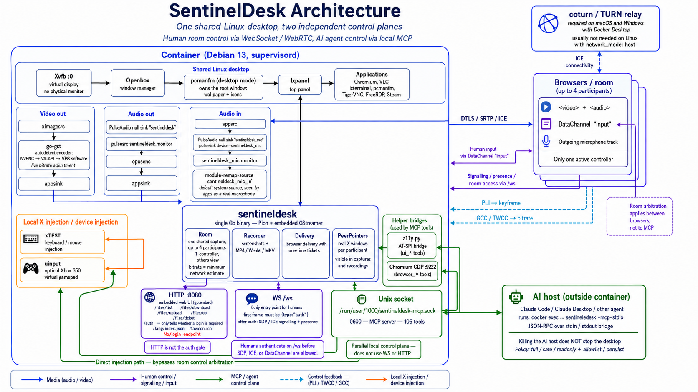
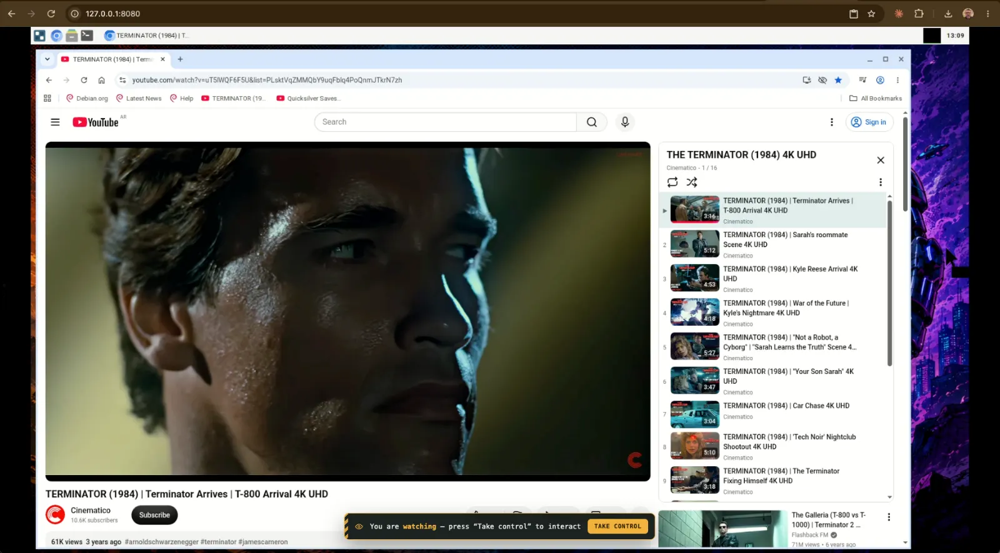
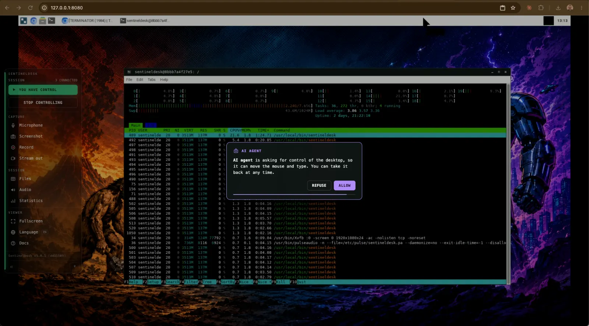
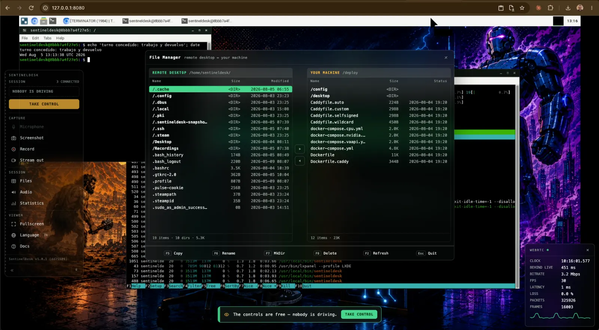
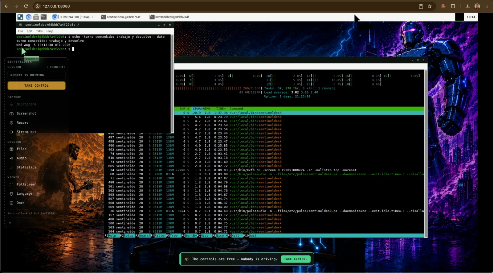

Apache 2.0 · Debian 13 · amd64 and arm64
A collaborative operating system for people and AI agents
A complete Linux desktop running inside a container with no physical monitor, streamed to the browser over WebRTC — and driven, at the same time, by people and by an agent that sees and acts on the same screen. Same X display, same session, same room.
Published here, in three languages. The desktop's Docs button opens this same guide.
The idea
Not a metaphor for an API
The agent is not handed a screenshot service or a headless browser. It joins the same X display, the same session, the same room as the people — with a seat of its own.
The agent is a participant
It has a name in the participant list and a pointer on screen in its own colour, so it is never ambiguous whether a colleague or the model just moved the mouse.
They take turns
Exactly one participant holds control. While a person is connected the agent has to ask — a prompt with a timer appears on their screen, and no answer means no. With an empty room it simply works.
They read the same state
Every command run in a terminal reports its exit status, whoever ran it. A person can hit an error, ask the agent to look, and the agent reads what actually happened instead of being told about it.
One capture, many observers
The desktop is encoded once and fanned out — to every browser, to the recorder, to a live stream. A second participant costs bandwidth, not CPU.
Two doors
Two independent control planes over one desktop
The second half is not a metaphor for an API. A person drives through a control layer in the browser; an agent drives through a local Unix socket. Neither is a guest of the other, and that separation is the single most important thing about the design.
People, over WebSocket
/ws is the only door. The first frame must be an authentication frame;
until it validates there is no SDP offer, no ICE and no DataChannel. Keyboard and
mouse arrive on a data channel and go into X through XTEST.
Agents, over a local socket
A 0600 Unix socket exposes 114 tools to any MCP-capable host. The bridge
is a thin stdio pipe spawned with docker exec, so killing the host never
takes the desktop down with it.
Architecture
A single Go binary
Pion WebRTC and GStreamer live in one process: every RTP packet goes from
appsink straight onto the WebRTC track, and the encoder stays under
full control at runtime — bitrate changes, keyframes on demand, stream
destinations attached and detached without cutting anything.
At startup it probes NVENC, VA-API, x264 and VP8 with a real pipeline and keeps the first that works on that host. Congestion control over TWCC — the same technique Google Meet uses — steers the bitrate, and the pointer is drawn on the client, so perceived latency is about zero. Typical: 50–70 ms glass-to-glass on a LAN.

Hands on
What each side can do
From the rail, a person can
- Take and release control — handover is cooperative, and whoever arrives first drives
- Send their microphone into the desktop, where it appears as a real capture device
- Take screenshots and record to MP4, WebM or MKV
- Stream the live session to YouTube, Twitch or their own VLC/OBS
- Move files both ways with a two-pane manager, share the clipboard, plug in a gamepad
- Watch live statistics and read the documentation in three languages
Through MCP, an agent can
- Move the mouse and type; manage windows, desktops and processes
- Open a terminal the person can watch — and read back what happened, exit codes included
- Read the screen as an accessibility tree or drive Chromium through DevTools: structure, not pixels
- Read and write files, install packages, open shells and SSH sessions with tunnels
- Take snapshots it can roll back to
- Ask the room for its turn — and accept no for an answer
The rail
One rail, every control
People drive the desktop through a single instrument rail floating over the video. Its left edge always answers the first question — who is driving: solid green means you, hatched amber means somebody else.
Interactive demo — click the controls
The rail as it ships: 240 px expanded, 58 px collapsed to icons, hidden entirely with the º key.
Session
Capture
Capture
Capture
Capture
Session
Session
Session
Viewer
Viewer
Viewer
Viewer
The rail itself
Point VLC or OBS at this machine. From Docker the host is host.docker.internal. Use udp:// for VLC — it only speaks srt:// as a caller, so it cannot receive one. srt:// is for a receiver that listens.
Off, the picture stays sharper: keyframes are large and the bits they take come out of the detail. Platforms always get them.
In pictures
The desktop, as you will see it




Built for latency
Hardware encoding picked by a real probe, keyframes on demand when a frame is lost, adaptive bitrate that follows what the network actually gives, and a minimal jitter buffer. Latency over smoothness, on purpose.
One door, watched
Authentication happens on the WebSocket: until it validates there is no WebRTC handshake at all. No HTTP endpoint holds secrets, repeated failures feed an escalating ban ledger, and sessions ride an HMAC-signed token.
It ships loaded
Chromium, VLC, a terminal, a file manager, TigerVNC, FreeRDP and Steam on Debian 13 — amd64 and arm64, from a bare VPS to a Raspberry Pi 5.
Quick start
One command on a machine of its own
The installer downloads one binary and asks it for everything else: the binary
embeds its own deployment files, so configuration and code can never disagree about
versions. auto picks Docker when it is present and a native systemd install
otherwise.
# VPS or Raspberry Pi 5 (Debian 13 / Raspberry Pi OS)
curl -fsSL https://raw.githubusercontent.com/\
lordbasex/sentineldesk/main/install.sh | sudo bash -s auto
# or, from a clone, for development
make up # → http://localhost:8080
Set AUTH_USER and AUTH_PASS before exposing it. Without them
authentication is disabled, which is for LAN development only.
Put a person and an agent on the same screen
Everything is in one repository, under Apache 2.0: the daemon, the browser client, the deployment tree and the installer.